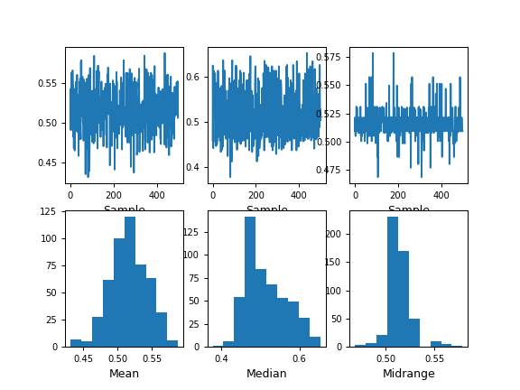

pandas.plotting.bootstrap_plot¶
-
pandas.plotting.bootstrap_plot(series, fig=None, size=50, samples=500, **kwds)[source]¶ Bootstrap plot on mean, median and mid-range statistics.
The bootstrap plot is used to estimate the uncertainty of a statistic by relaying on random sampling with replacement [1]. This function will generate bootstrapping plots for mean, median and mid-range statistics for the given number of samples of the given size.
[1] “Bootstrapping (statistics)” in https://en.wikipedia.org/wiki/Bootstrapping_%28statistics%29 Parameters: - series : pandas.Series
Pandas Series from where to get the samplings for the bootstrapping.
- fig : matplotlib.figure.Figure, default None
If given, it will use the fig reference for plotting instead of creating a new one with default parameters.
- size : int, default 50
Number of data points to consider during each sampling. It must be greater or equal than the length of the series.
- samples : int, default 500
Number of times the bootstrap procedure is performed.
- **kwds :
Options to pass to matplotlib plotting method.
Returns: - fig : matplotlib.figure.Figure
Matplotlib figure
See also
pandas.DataFrame.plot- Basic plotting for DataFrame objects.
pandas.Series.plot- Basic plotting for Series objects.
Examples
>>> s = pd.Series(np.random.uniform(size=100)) >>> fig = pd.plotting.bootstrap_plot(s) # doctest: +SKIP
